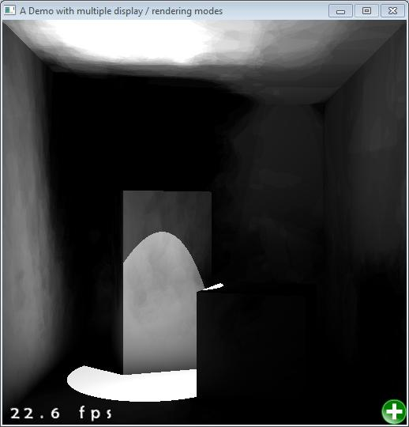

Also VPL techniques suffers from the “spike” artifact (e.g. the bright blotch on the curtain, all images above have already been clamped somehow):
Click to get ISM demo & source.
Moreover, inadequate VPLs will have the noticeable boundary problem:
This is partially solved by applying VSM in our demo:
To solve the noise due to light movement and better sample the VPLs, ISM author also have a follow-up work Ritschel et al. [2011] to eliminate artifact that shadow map exists.
Now we add color to this cornell box and see what looks like:
Then we add VPLs presentation to the demo and then compare 4 types of “easy and fast” sampling techniques as following.
Below is their corresponding results (plus VPLs represented as translucent 3d arrow) due to different sampling techniques.
We also change the scene to more complex one like a slightly modified Sponza.
We found the imperfect shadow map can produce plausible AO-like shadow in certain corner because the imprecise pull/push phase, however it cannot take care of the geometries that need finer detail, e.g. incorrect shadow of polar.
The more pull/push level goes, the more darker shadow becomes and sometimes pull/push might “over fill hole”. The necessary pull/push levels depend on the points of one instance of the scene and resolution of each VPL’s shadow map. If we have more points like 5000 for each instance of the scene, we’ll have a much better results for ISM without pull/push and pull/push’s effort to improve the quality of the ISM is limited. The ghost edge effect for the ISM as shown below will also be reduced.
Next step we test ISM in RSM for indirect one bounce lighting. We chose spot light and 5000 points for point cloud sampling. For VPL sampling, right now we apply just uniform sampling from RSM.
If we don’t consider the VPLs lighting intensity, which means VPLs to each direction has the same intensity. The line artifact will appear, and I guess it might also happen when BRDF is sharp.
With no pull/push process, the VPL visibility test will generate dark spot and also light leak.
Now, using pull/push, it has better result. However, it still suffer from spatial noises due to movement of light. If you move the light in the scene, you could see horrible noise like hand-drawing cartoon!

So we guess it might be due to VPL sampling.
My first implementation is using ISM for area lighting in cornell box. I first created multiple instances (16x16 instances for example) of the point cloud of the cornell box scene, then used vertex shader to split these instance into the same render target thus forming an ISM. The area light is sampled uniformly as virtual point lights (VPLs, e.g. 16x16 for 16x16 instances). So we could generate direct illumination of the area light like this 12. Without explicit indication, we only test our result on my laptop for simple scene.
For pull and push phase, I didn’t follow the pull push paper Marroquim et al. [2007] to consider edges since we only need to sample position for depth map and actually, precision is not a primary goal in our focus when considering indirect light and soft shadows. Pull and push did fixed the hole in a cheap way!
The multiple texture indexing (e.g. 16x16 times’ texture2D for 16x16 VPLs) is really costy. Multiple instances of the point cloud is not an performance issue. How can we reduce the texture index times in the pixel shader? Can we group them into a hierarchical tree?
C Dachsbacher and M Stamminger. Splatting indirect illumination. page 100. ACM, 2006.
R. Marroquim, M. Kraus, and P.R. Cavalcanti. Efficient point-based rendering using image reconstruction. In PBG07: Proceedings of the Eurographics Symposium on Point-Based Graphics, pages 101–108, 2007.
T. Ritschel, T. Grosch, M.H. Kim, H.P. Seidel, C. Dachsbacher, and J. Kautz. Imperfect shadow maps for efficient computation of indirect illumination. ACM Trans. Graph, 27(5):129, 2008.
T. Ritschel, E. Eisemann, I. Ha, J.D.K. Kim, and H.P. Seidel. Making imperfect shadow maps view-adaptive: High-quality global illumination in large dynamic scenes. In Computer Graphics Forum. Wiley Online Library, 2011.